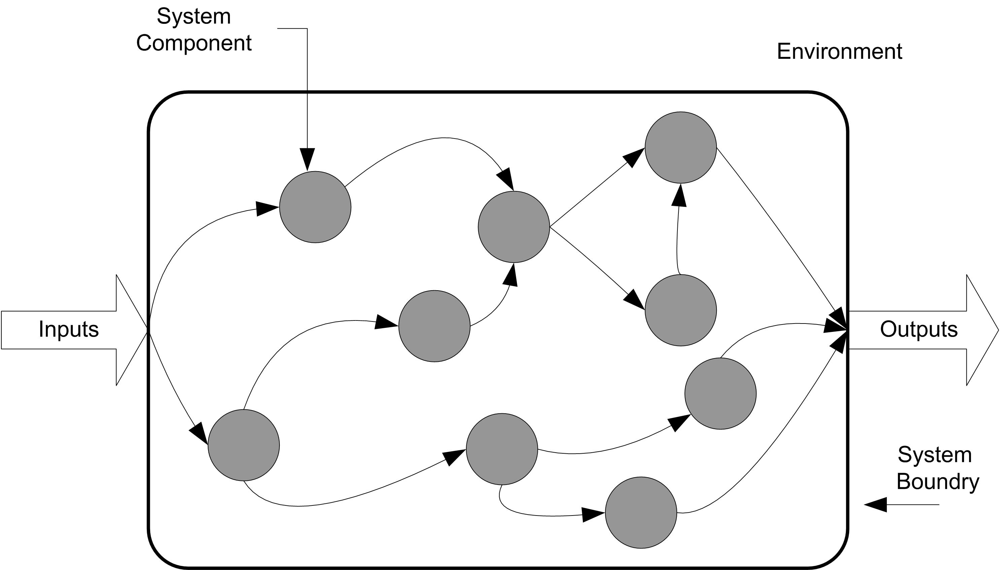
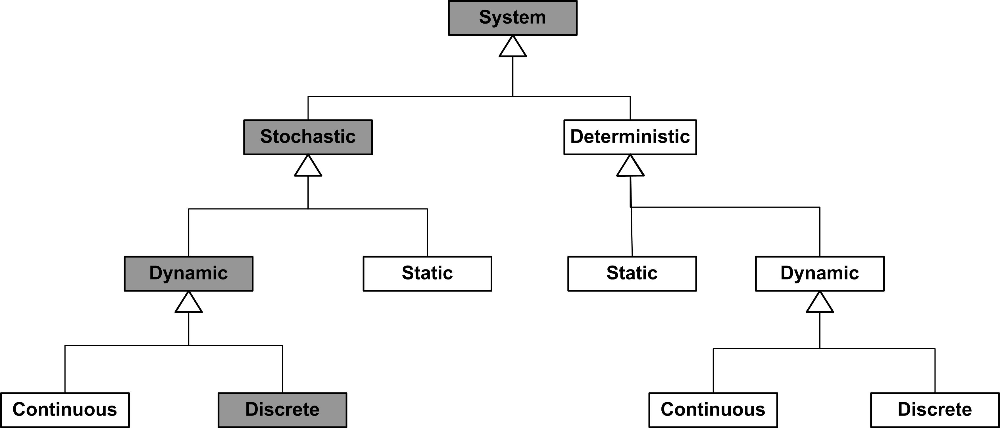
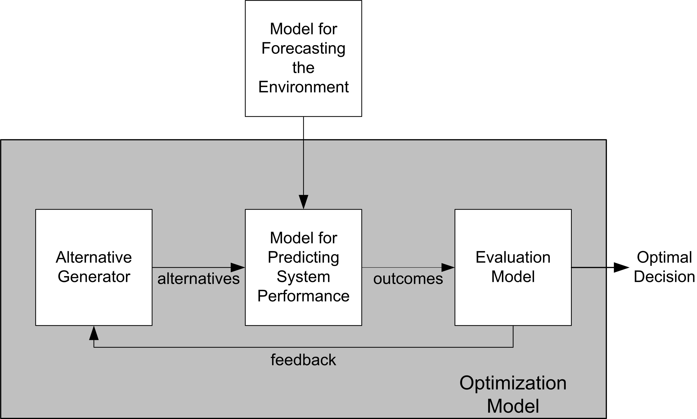
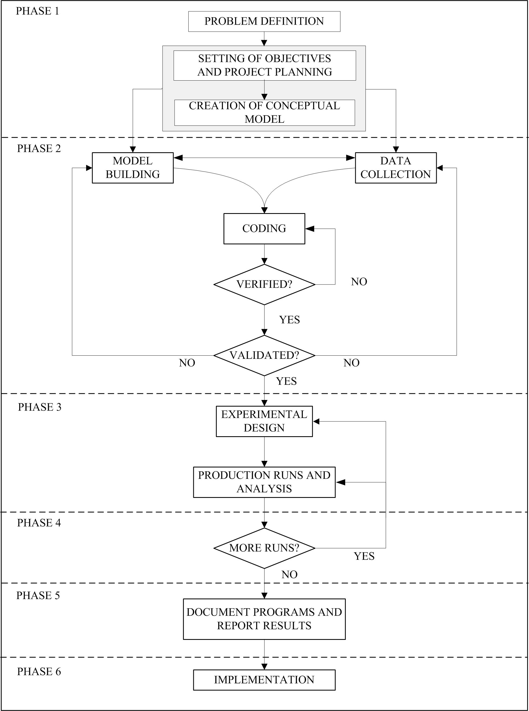

1 Simulation Modeling
Learning Objectives
To be able to describe what computer simulation is
To be able to discuss why simulation is an important analysis tool
To be able to list and describe the various types of computer simulations
To be able to describe a simulation methodology
In this book, you will learn how to model systems within a computer environment in order to analyze system design configurations. The models that you will build and exercise are called simulation models. When developing a simulation model, the modeler attempts to represent the system in such a way that the representation assumes or mimics the pertinent outward qualities of the system. This representation is called a simulation model. When you execute the simulation model, you are performing a simulation. In other words, simulation is an instantiation of the act of simulating. A simulation is often the next best thing to observing the real system. If you have confidence in your simulation, you can use it to infer how the real system will operate. You can then use your inference to understand and improve the system’s performance.
1.1 Simulation Modeling
In general, simulations can take on many forms. Almost everyone is familiar with the board game Life. In this game, the players imitate life by going to college, getting a job, getting married, etc. and finally retiring. This board game is a simulation of life. As another example, the military performs war game exercises which are simulations of battlefield conditions. Both of these simulations involve a physical representation of the thing being simulated. The board game, the rules, and the players represent the simulation model. The battlefield, the rules of engagement, and the combatants are also physical representations. No wishful thinking will make the simulations that you develop in this book real. This is the first rule to remember about simulation. A simulation is only a model (representation) of the real thing. You can make your simulations as realistic as time and technology allows, but they are not the real thing. As you would never confuse a toy airplane with a real airplane, you should never confuse a simulation of a system with the real system. You may laugh at this analogy, but as you apply simulation to the real world you will see analysts who forget this rule. Don’t be one.
All the previous examples involved a physical representation or model (real things simulating other real things). In this book, you will develop computer models that simulate real systems. Ravindran et al. (1987) define computer simulation as: “A numerical technique for conducting experiments on a digital computer which involves logical and mathematical relationships that interact to describe the behavior of a system over time.” Computer simulations provide an extra layer of abstraction from reality that allows fuller control of the progression of and the interaction with the simulation. In addition, even though computer simulations are one step removed from reality, they are often capable of providing constructs which cannot be incorporated into physical simulations. For example, an airplane flight simulator can have emergency conditions for which it would be too dangerous or costly to provide in a physical based simulation training scenario. This representational power of computer modeling is one of the main reasons why computer simulation is used.
1.2 Why Simulate?
Imagine trying to analyze the following situation. Patients arrive at an emergency room. The arrival of the patients to the emergency department occurs randomly and may vary with the day of the week and even the hour of the day. The hospital has a triage station, where the arriving patient’s condition is monitored. If the patient’s condition warrants immediate attention, the patient is expedited to an emergency room bed to be attended by a doctor and a nurse. In this case, the patient’s admitting information may be obtained from a relative. If the patient does not require immediate attention, the patient goes through the admitting process, where the patient’s information is obtained. The patient is then directed to the waiting room, to wait for allocation to a room, a doctor, and a nurse. The doctors and nurses within the emergency department must monitor the health of the patients by performing tests and diagnosing the patient’s symptoms. This occurs on a periodic basis. As the patient receives care, the patient may be moved to and require other facilities (MRI, X-ray, etc.). Eventually, the patient is either discharged after receiving care or admitted to the main hospital. The hospital is interested in conducting a study of the emergency department in order to improve the care of the patients while better utilizing the available resources. To investigate this situation, you might need to understand the behavior of certain measures of performance:
The average number of patients that are waiting.
The average waiting time of the patients and their average total time in the emergency department.
The average number rooms required per hour.
The average utilization of the doctors and nurses (and other equipment).
Because of the importance of emergency department operations, the hospital has historical records available on the operation of the department through its patient tracking system. With these records, you might be able to estimate the current performance of the emergency department. Despite the availability of this information, when conducting a study of the emergency department you might want to propose changes to how the department will operate (e.g. staffing levels) in the future. Thus, you are faced with trying to predict the future behavior of the system and its performance when making changes to the system. In this situation, you cannot realistically experiment with the actual system without possibly endangering the lives or care of the patients. Thus, it would be better to model the system and to test the effect of changes on the model. If the model has acceptable fidelity, then you can infer how the changes will affect the real system. This is where simulation techniques can be utilized.
If you are familiar with operations research and industrial engineering techniques, you may be thinking that the emergency department can be analyzed by using queueing models. Later chapters of this book will present more about queueing models; however, for the present situation, the application of queueing models will most likely be inadequate due to the complex policies for allocating nurses, doctors, and beds to the patients. In addition, the dynamic nature of this system (the non-stationary arrivals, changing staffing levels, etc.) cannot be well modeled with current analytical queueing models. Queueing models might be used to analyze portions of the system, but a total analysis of the dynamic behavior of the entire system is beyond the capability of these types of models. But, a total analysis of the system is not beyond simulation modeling.
Simulation may be the preferred modeling methodology if the understanding gained from developing and using a simulation model is worth the time and cost associated with developing and using the model. Good uses of simulation include:
Understanding how complex interactions in the system effect performance.
Understanding how randomness effects performance.
Comparing a fixed set of design alternatives to determine which design meets the performance goals under which conditions
Training people to prepare them for dealing with events that may be disruptive to the actual system.
The model will be used repeatedly for decision making.
When the decision associated with the problem has a high cost so that the cost of building the model and evaluating the design is worth its development.
When the current system does not yet exist and you need to ensure that the chosen design will meet specifications.
Simulation modeling activities encapsulate all three major modeling methods of data analytics: descriptive, predictive, and prescriptive. Descriptive modeling uses historical data to describe what happened in order to understand past behavior of a system. Predictive modeling uses historical data to develop models that help us understand future behavior in order the answer what may happen. Descriptive modeling summarizes past data for understanding. Predictive modeling uses past data to predict future behavior. Prescriptive modeling indicates what should be done and is integral to answering questions involving system design.
A simulation model is both a descriptive and predictive model. In addition, when coupled with stochastic optimization methods or a rigorous design process that evaluates and recommends designs, a simulation model becomes an integral part of the prescriptive modeling process. A simulation model describes how a system works by encapsulating that description within the operating runs/constructs of the model. A simulation model uses descriptive models (input models, summary statistics). A simulation model predicts future system response. A simulation model can be used to predict future behavior through running what-if scenarios. Simulation is inherently a predictive modeling methodology. Unlike other predictive modeling techniques found in data analytics, such as regression, neural networks, random forests, etc., simulation explicitly incorporates domain knowledge into the modeling activity by incorporating system operating behavior. The behavior is modeled through the physical and logical rules that apply to the relationships between the components of the system. Unlike pure statistical predictive models, simulation has the advantage of explicitly representing relationships rather than just relying on discovering relationships.
A key advantage of simulation modeling is that it has the capability of modeling the entire system and its complex inter-relationships. The representational power of simulation provides the flexible modeling that is required for capturing complex processes. As a result, all the important interactions among the different components of the system can be accounted for within the model. The modeling of these interactions is inherent in simulation modeling because simulation imitates the behavior of the real system (as closely as necessary). The prediction of the future behavior of the system is then achieved by monitoring the behavior of different modeling scenarios as a function of simulated time.
Real world systems are often too complex for analytical models and often too expensive to experiment with directly. Simulation models allow the modeling of this complexity and enable low cost experimentation to make inferences about how the actual system might behave.
1.3 Types of Systems and Simulation Models
The main purpose of a simulation model is to allow observations about a particular system to be collected as a function of time. So far the word system has been used in much of the discussion, without formally discussing what a system is. According to (Blanchard and Fabrycky 1990) a system is a set of inter-related components working together towards a common objective. The standard for systems engineering provides a deeper definition:
"A system is a composite of people, products, and processes that provide a capability to satisfy stated needs. A complete system includes the facilities, equipment (hardware and software), materials, services, data, skilled personnel, and techniques required to achieve, provide, and sustain system effectiveness." (Command 1991)
Figure 1.1 illustrates the fact that a system is embedded within an environment and that typically a system requires inputs and produces output using internal components. How you model a particular system will depend upon the intended use of the model and how you perceive the system. The modeler’s view of the system colors how they conceptualize it. For example, for the emergency room situation, "What are the system boundaries? Should the ambulance dispatching and delivery process be modeled? Should the details of the operating room be modeled?” Clearly, the emergency room has these components, but your conceptualization of it as a system may or may not include these items, and thus, your decisions regarding how to conceptualize the system will drive the level of abstraction within your modeling. An important point to remember is that two perfectly logical and rational people can look at the same thing and conceptualize that thing as two entirely different systems based on their "Weltanschauung" or world view.

Because how you conceptualize a system drives your modeling, it is useful to discuss some general system classifications. Systems might be classified by whether or not they are man-made (e.g. manufacturing system) or whether they are natural (e.g. solar system). A system can be physical (e.g. an airport) or conceptual (e.g. a system of equations). If stochastic or random behavior is an important component of the system then the system is said to be stochastic, if not then it is considered deterministic. One of the more useful ways to look at a system is whether it changes with respect to time. If a system does not change significantly with respect to time it is said to be static, else it is called dynamic. If a system is dynamic, you might want to consider how it evolves with respect to time. A dynamic system is said to be discrete if the state of the system changes at discrete points in time. A dynamic system is said to be continuous if the state of the system changes continuously with time. This dichotomy is purely a function of your level of abstraction. If conceptualizing a system as discrete, serves our purposes then you can call the system discrete. Figure 1.2 illustrates this classification of systems. This book primarily examines stochastic, dynamic, discrete systems.

The main purpose of a simulation model is to allow observations about a particular system to be gathered as a function of time. From that standpoint, there are two distinct types of simulation: 1) discrete event and 2) continuous.
Just as discrete systems change at discrete points in time, in discrete event simulation observations are gathered at selected points in time when certain changes take place in the system. These selected points in time are called events. On the other hand, continuous simulation requires that observations be collected continuously at every point in time (or at least that the system is described for all points in time). The types of models to be examined in this book are called discrete-event simulation models.
To illustrate the difference between the two types of simulation, contrast a fast food service counter with that of oil loading facility that is filling tankers. In the fast food service counter system, changes in the status of the system occur when a customer either arrives to place an order or when the customer receives their food. At these two events, measures such as queue length and waiting time will be affected. At all the other points in time, these measures remain either unchanged (e.g. queue length) or not yet ready for observation (e.g. waiting time of the customer). For this reason, the system does not need to be observed on a continuous basis. The system need only be observed at selected discrete points in time, resulting in the applicability of a discrete-event simulation model.
In the case of the oil tanker loading example, one of the measures of performance is the amount of oil in each tanker. Because the oil is a liquid, it cannot be readily divided into discrete components. That is, it flows continuously into the tanker. It is not necessary (or practical) to track each molecule of oil individually, when you only care about the level of the oil in the tanker. In this case, a model of the system must describe the rate of flow over time and the output of the model is presented as a function of time. Systems such as these are often modeled using differential equations. The solution of these equations involves numerical methods that integrate the state of the modeled system over time. This, in essence, involves dividing time into small equal intervals and stepping through time.
Often both the discrete and continuous viewpoints are relevant in modeling a system. For example, if oil tanker arrives at the port to be filled, we have an arrival event that changes the state of the system. This type of modeling situation is called combined continuous discrete modeling.
A system and our resulting model depends on how we characterize the state of the system. The state of a system is the set of properties/variables that describe the system at any time \(\{x_1(t), x_2(t), \dots\}\) where \(x_1(t)\) is a variable that represents a system property value at time \(t\). Variables that take on a countable set of values are discrete. Variables that take on an uncountable set of values are said to be continuous. For discrete variables, we can define a mapping from the set of integers to each possible value. Even in the discrete case, there may be an infinite number of values. Continuous variables are represented by the set of real numbers. That is, there are an uncountably infinite number of possible values that the variable can take on.
A discrete system has all discrete variables in its state. A continuous system has all continuous variables in its state. A combined continuous-discrete system has both types of variables in defining its state. Consider an airplane:
If we are interested in the number of parts operating to specification at any time t, then the state is \(\{N_1(t), N_2(t), \dots \}\) where \(N_1(t) = 1\) if part 1 is operating and 0 if part 1 is not operating to specification. The state vector consists of all discrete variables. This is a discrete system.
If we are interested in the temperature of each part at time \(t\), then the state is \(\{T_1(t), T_2(t), \dots \}\), where \(T_1(t)\) is the temperature in Celsius of part 1 at time \(t\), etc. The state vector consists of all continuous variables. This is continuous system.
If we are interested in the velocity of a plane at time \(t\) and the number of wheels deployed at time \(t\), then the state is \(\{v(t), n(t)\}\) where \(v(t)\) is the velocity of the plane in meters/second and \(n(t)\) is \(\{0,1,2,3,4\}\) wheels. Then the state vector consists of both continuous and discrete variables that change with time. This is a combined continuous/discrete system.
Static systems are systems for which time is not a significant factor. In other words, that the state does not evolve over time. Dynamic systems are systems for which system state changes with respect to time. In a deterministic system, the variables are not governed by underlying random processes. In a stochastic system, some of the variables are governed by underlying random processes. Time can change continuously or at discrete points. When time changes only at discrete points in time, we call these points, events.
Some simulation languages have modeling constructs for both continuous and discrete modeling; however, this book does not cover the modeling of continuous or combined continuous discrete systems. There are many useful references on this topic. We will be modeling discrete-event dynamic stochastic systems in this textbook.
1.4 Simulation: Descriptive or Prescriptive Modeling?
A descriptive model describes how a system behaves. Simulation is at its heart a descriptive modeling technique. Simulation is used to depict the behaviors or characteristics of existing or proposed systems. However, a key use of simulation is to convey the required behaviors or properties of a proposed system. In this situation, simulation is used to prescribe a solution. A prescriptive model tells us what to do. In other words, simulation can also be used for prescriptive modeling. Figure 1.3 illustrates the concept of using simulation to recommend a solution.

In the figure, a simulation model is used for predicting the behavior of the system. Input models are used to characterize the system and its environment. An evaluative model is used to evaluate the output of the simulation model to understand how the output compares to desired goals. The alternative generator is used to generate different scenarios to be feed into the simulation model for evaluation. Through a feedback mechanism the inputs can be changed based on the evaluation of the outputs and eventually a recommended solution can be achieved.
For example, in the modeling a drive up pharmacy, suppose that the probability of a customer waiting longer than 3 minutes in line had to be less than 10%. To form design alternatives, the inputs (e.g. number of pharmacists, possibly the service process) can be varied. Each alternative can then be evaluated to see if the waiting time criteria is met. In this simple situation, you might act as your own alternative generator and the evaluative model is as simple as meeting a criteria; however, in more complex models, there will often be hundreds of inputs to vary and multiple competing objectives. In such situations, simulation optimization and heuristic search methods are often used. This is an active and important area of research within simulation.
1.5 Randomness in Simulation
In most real-life situations, the arrival process and the service process occur in a random fashion. Even though the processes may be random, it does not mean that you cannot describe or model the randomness. To have any hope of simulating the situation, you must be able to model the randomness. One of the ways to model this randomness is to describe the phenomenon as a random variable governed by a particular probability distribution. For example, if the arrivals to the bank occur according to a Poisson process, then from probability theory it is known that the distribution of inter-arrival times is an exponential distribution. In general, information about how the customers arrive must be secured either through direct observation of the system or by using historical data. If neither source of information is available, then some plausible assumptions must be made to describe the random process by a probability model.
If historical data is available, there are two basic choices for how to handle the modeling. The first choice is to develop a probability model given the data. The second choice is to try to drive the simulation directly from the historical data. The latter approach is not recommended. First of all, it is extremely unlikely that the captured data will be in a directly usable form. Secondly, it is even more unlikely that the data will be able to adequately represent all the modeling scenarios that you will need through the course of experimenting with the model. For example, suppose that you only have 1 day’s worth of arrival data, but you need to simulate a month’s worth of system operation. If you simply re-drive your simulation using the 1 day’s worth of data, you are not simulating different days! It is much more advisable to develop probability models either from historical data or from data that you capture in developing your model. Appendix B discusses some of the tools and techniques for modeling probability distributions.
Once a probability model has been developed, statistical theory provides the means for obtaining random samples based on the use of uniformly distributed random numbers on the interval (0,1). These random samples are then used to map the future occurrence of an event on the time scale. For example, if the inter-arrival time is exponential then a random sample drawn from that distribution would represent the time interval until the occurrence of the next arrival. The process of generating random numbers and random variables within simulation is presented in Appendix A.
1.6 Simulation Languages
Discrete event simulation normally involves a tremendous volume of computation. Consequently, the use of computers to carry out these computations is essential; however, the volume of computations is not the only obstacle in simulation. If you consider the bank teller example discussed in the previous sections, you will discover that it involves a complex logical structure that requires special expertise before it can be translated into a computer model. Attempting to implement the simulation model, from scratch, in a general purpose language such as FORTRAN, Visual Basic, C/C++, Java, Kotlin will require above average programming skills. In the absence of specialized libraries for these languages that try to relive the user from some of the burden, simulation as a tool would be relegated to "elite" programmers. Luckily, the repetitive nature of computations in simulation allows the development of computer libraries that are applicable to simulation modeling situations. For example, libraries or packages must be available for ordering and processing events chronologically, as well as generating random numbers and automatically collecting statistics. Such a library for simulating discrete-event systems in Java is available from the author, see (Rossetti 2008).
The computational power and storage capacity of computers has motivated the development of specialized simulation languages. Some languages have been developed for continuous or discrete simulations. Others can be used for combined continuous and discrete modeling. All simulation languages provide certain standard programming facilities and will differ in how the user will take advantage of these facilities. There is normally some trade-off between how flexible the language is in representing certain modeling situations. Usually, languages that are highly flexible in representing complex situations require more work (and care) by the user to account for how the model logic is developed. Some languages are more programming oriented (e.g. SIMSCRIPT) and others are more "drag and drop" (e.g. ProModel, Arena, etc. ).
The choice of a simulation language is a difficult one. There are many competing languages, each having their own advantages and disadvantages. The Institute for Operations Research and Management Science (INFORMS) often has a yearly product review covering commercial simulation languages, see for example (http://lionhrtpub.com/orms/). In addition to this useful comparison, you should examine the Winter Simulation Conference (www.wintersim.org). The conference has hands on exhibits of simulation software and the conference proceedings often have tutorials for the various software packages. Past proceedings have been made available electronically through the generous support of the INFORMS Society for Simulation (http://www.informs-sim.org/wscpapers.html).
Kotlin was chosen for this textbook because of the author’s experience utilizing the software, its ease of use, and the availability of open source libraries. While all languages have flaws, using a language with extensions or libraries to support simulation is essential in performing high performance simulation studies. Once you learn one simulation language well, it is much easier to switch to other languages and to understand which languages will be more appropriate for certain modeling situations.
The library extensions for Kotlin to support simulation are called the KSL, for Kotlin Simulation Library. The KSL supports both the event-view and the process-view of simulation. That is, when using the process-view library extensions , the modeler describes the process that an "entity" experiences while flowing through or using the elements of the system. You will learn about how the KSL facilitates both the event-view and the process modeling view throughout this textbook.
1.7 Simulation Methodology
This section presents a brief overview of the steps of simulation modeling by discussing the process in the context of a methodology. A methodology is simply a series of steps to follow. Since simulation involves systems modeling, a simulation methodology based on the general precepts of solving a problem through systems analysis is presented here. A general methodology for solving problems can be stated as follows:
Define the problem
Establish measures of performance for evaluation
Generate alternative solutions
Rank alternative solutions
Evaluate and Iterate during process
Execute and evaluate the solution
This methodology can be referred to by using the first letter of each step. The DEGREE methodology for problem solving represents a series of steps that can be used during the problem solving process. The first step helps to ensure that you are solving the right problem. The second step helps to ensure that you are solving the problem for the right reason, i.e. your metrics must be coherent with your problem. Steps 3 and 4 ensure that the analyst looks at and evaluates multiple solutions to the problem. In other words, these steps help to ensure that you develop the right solution to the problem. A good methodology recognizes that the analyst needs to evaluate how well the methodology is doing. In step 5, the analyst evaluates how the process is proceeding and allows for iteration. Iteration is an important concept that is foreign to many modelers. The concept of iteration recognizes that the problem solving process can be repeated until the desired degree of modeling fidelity has been achieved. Start the modeling at a level that allows it to be initiated and do not try to address the entire situation in each of the steps. Start with small models that work and build them up until you have reached your desired goals. It is important to get started and get something established on each step and continually go back in order to ensure that the model is representing reality in the way that you intended. The final step is often over looked. Simulation is often used to recommend a solution to a problem. Step 6 indicates that if you have the opportunity you should execute the solution by implementing the decisions. Finally, you should always follow up to ensure that the projected benefits of the solution were obtained.
The DEGREE problem solving methodology should serve you well; however, simulation involves certain unique actions that must be performed during the general overall problem solving process. When applying DEGREE to a problem that may require simulation, the general DEGREE approach needs to be modified to explicitly consider how simulation will interact with the overall problem solving process.
Figure 1.4 represents a refined general methodology for applying simulation to problem solving.
Problem Formulation
Define the problem
Define the system
Establish performance metrics
Build conceptual model
Document model assumptions
Simulation Model Building
Model translation
Input data modeling
Verification
Validation
Experimental Design and Analysis
Preliminary Runs
Final experiments
Analysis of results
Evaluate and Iterate
Documentation
Model manual
User manual
Implementation
The first phase, problem formulation, captures the essence of the first two steps in the DEGREE process. The second phase, model building, captures the essence of step 3 of the DEGREE process. When building models, you are either explicitly or implicitly developing certain design alternatives. The third phase, experimental design and analysis, encapsulates some of steps 3 and 4 of the DEGREE process. In designing experiments, design alternatives are specified and when analyzing experiments their worth is being evaluated with respect to problem objectives. The fourth phase, evaluate and iterate, captures the notion of iteration. Finally, the fifth and sixth phases, documentation and implementation complete the simulation process. Documentation is essential when trying to ensure the ongoing and future use of the simulation model, and implementation recognizes that simulation projects often fail if there is no follow through on the recommended solutions.

The problem formulation phase of the study consists of five primary activities:
Defining the problem
Defining the system
Establishing performance metrics.
Building conceptual models
Documenting modeling assumptions
A problem starts with a perceived need. These activities are useful in developing an appreciation for and an understanding of what needs to be solved. The basic output of the problem definition activity is a problem definition statement. A problem definition statement is a narrative discussion of the problem. A problem definition statement is necessary to accurately and concisely represent the problem for the analyst and for the problem stakeholders. This should include all the required assumptions made during the modeling process. It is important to document your assumptions so that you can examine their effect on the model during the verification, validation, and experimental analysis steps of the methodology. This ensures that the problem is well understood and that all parties agree upon the nature of the problem and the goals of the study. The general goals of a simulation study often include:
Comparison: To compare system alternatives and their performance measures across various factors (decision variables) with respect to some objectives
Optimization: This is a special case of comparison in which you try to find the system configuration that optimizes performance subject to constraints.
Prediction: To predict the behavior of the system at some future point in time.
Investigation: To learn about and gain insight into the behavior of the system given various inputs.
These general goals will need to be specialized to the problem under study. The problem definition should include a detailed description of the objectives of the study, the desired outputs from the model, and the types of scenarios to be examined or decisions to be made.
The second activity of this phase produces a definition of the system. A system definition statement is necessary to accurately and concisely define the system, particularly its boundaries. The system definition statement is a narrative, which often contains a pictorial representation of the major elements of the system. This ensures that the simulation study is focused on the appropriate areas of interest to the stakeholders and that the scope of the project is well understood.
When defining the problem and the system, one should naturally begin to develop an understanding of how to measure system performance. The third activity of problem formulation makes this explicit by encouraging the analyst to define the required performance measures for the model. To meaningfully compare alternative scenarios, objective and measurable metrics describing the performance of the system are necessary. The performance metrics should include quantitative statistical measures from any models used in the analysis (e.g. simulation models), quantitative measures from the systems analysis, (e.g. cost/benefits), and qualitative assessments (e.g. technical feasibility, human, operational feasibility). The focus should be placed on the performance measures that are considered to be the most important to system decision-makers and tied directly to the objectives of the simulation study. Evaluation of alternatives can then proceed in an objective and unbiased manner to determine which system scenario performs the best according to the decision maker’s preferences.
The problem definition statement, the system definition statement, and explicit performance metrics set the stage for more detailed modeling. These activities should be captured in a written form. Within this text, you will develop models of certain “ready-made” book problems. One way to accomplish the problem formulation phase of a simulation study is to consider writing yourself a "book problem". You will need enough detail in these documents that a simulation analyst (you) can develop a model in any simulation language for the given situation.
With a good understanding of the problem and of the system under study, you should be ready to begin your detailed model formulations. Model formulation does not mean a computer program. You should instead use conceptual modeling tools: conceptual diagrams, flow charts, etc. prior to any use of software to implement a model. The purpose of conceptual modeling tools is to convey a more detailed system description so that the model may be translated into a computer representation. General descriptions help to highlight the areas and processes of the system that the model will simulate. Detailed descriptions assist in simulation model development and coding efforts. Some relevant diagramming constructs include:
Context Diagrams: A context diagram assists in conveying the general system description. The diagram is a pictorial representation of the system that often includes flow patterns typically encountered. Context diagrams are often part of the system description document. There are no rules for developing context diagrams. If you have an artistic side, here is your opportunity to shine!
Activity Diagrams: An activity diagram is a pictorial representation of the process for an entity and its interaction with resources while within the system. If the entity is a temporary entity (i.e. it flows through the system) the activity diagram is called an activity flow diagram. If the entity is permanent (i.e. it remains in the system throughout its life) the activity diagram is called an activity cycle diagram. Activity diagrams will be used extensively within this text.
Software engineering diagrams: Because simulation entails software development, the wide-variety of software engineering diagramming techniques can be utilized to provide information for the model builder. Diagrams such as flow charts, database diagrams, IDEF (ICAM DEFinition language) diagrams, UML (unified modeling language) diagrams, state charts, etc are all useful in documenting complex modeling situations. These techniques assist development and coding efforts by focusing attention on describing, and thus understanding, the elements within the system. Within this text, activity diagrams will be augmented with some simple flow chart symbols and some simple state diagrams will be used to illustrate a variety of concepts.
In your modeling, you should start with an easy conceptual model that captures the basic aspects and behaviors of the system. Then, you should begin to add details, considering additional functionality. Finally, you should always remember that the complexity of the model has to remain proportional to the quality of the available data and the degree of validity necessary to meet the objectives of the study. In other words, don’t try to model the world!
After developing a solid conceptual model of the situation, simulation model building can begin. During the simulation model building phase, alternative system design configurations are developed based on the previously developed conceptual models. Additional project planning is also performed to yield specifications for the equipment, resources, and timing required for the development of the simulation models. The simulation models used to evaluate the alternative solutions are then developed, verified, validated, and prepared for analysis. Within the context of a simulation project this process includes:
Input Data Preparation: Input data is analyzed to determine the nature of the data and to determine further data collection needs. Necessary data is also classified into several areas. This classification establishes different aspects of the model that are used in model development.
Model Translation: Description of the procedure for coding the model, including timing and general procedures and the translation of the conceptual models into computer simulation program representations.
Verification: Verification of the computer simulation model is performed to determine whether or not the program performs as intended. To perform model verification, model debugging is performed to locate any errors in the simulation code. Errors of particular importance include improper flow control or entity creation, failure to release resources, and logical/arithmetic errors or incorrectly observed statistics. Model debugging also includes scenario repetition utilizing identical random number seeds, "stressing" the model through a sensitivity analysis (varying factors and their levels) to ensure compliance with anticipated behavior, and testing of individual modules within the simulation code.
Validation: Validation of the simulation model is performed to determine whether or not the simulation model adequately represents the real system. The simulation model is shown to personnel (of various levels) associated with the system in question. Their input concerning the realism of the model is critical in establishing the validity of the simulation. In addition, further observations of the system are performed to ensure model validity with respect to actual system performance. A simple technique is to statistically compare the output of the simulation model to the output from the real system and to analyze whether there is a significant (and practical) difference between the two.
Model translation will be a large component of each chapter as you learn how to develop simulation models. Verification and validation techniques will not be a major component of this text, primarily because the models will be examples made for educational purposes. This does not mean that you should ignore this important topic. You are encouraged to examine many of the useful references on validation, see for example (Balci 1997) and (Balci 1998).
After you are confident that your model has been verified and validated to suit your purposes, you can begin to use the model to perform experiments that investigate the goals and objectives of the project. Preliminary simulation experiments should be performed to set the statistical parameters associated with the main experimental study. The experimental method should use the simulation model to generate benchmark statistics of current system operations. The simulation model is then altered to conform to a potential scenario and is re-run to generate comparative statistics. This process is continued, cycling through suggested scenarios and generating comparative statistics to allow evaluation of alternative solutions. In this manner, objective assessments of alternative scenarios can be made.
For a small set of alternatives, this “one at a time” approach is reasonable; however, often there are a significant number of design factors that can affect the performance of the model. In this situation, the analyst should consider utilizing formal experimental design techniques. This step should include a detailed specification of the experimental design (e.g. factorial, etc) and any advanced output analysis techniques (e.g. batching, initialization bias prevention, variance reduction techniques, multiple comparison procedures, etc.) that may be required during the execution of the experiments. During this step of the process, any quantitative models developed during the previous steps are exercised. Within the context of a simulation project, the computer simulation model is exercised at each of the design points within the stipulated experimental design.
Utilizing the criteria specified by system decision-makers, and utilizing the simulation model’s statistical results, alternative scenarios should then be analyzed and ranked. A methodology should be used to allow the comparison of the scenarios that have multiple performance measures that trade-off against each other.
If you are satisfied that the simulation has achieved your objectives then you should document and implement the recommended solutions. If not, you can iterate as necessary and determine if any additional data, models, experimentation, or analysis is needed to achieve your modeling objectives. Good documentation should consist of at least two parts: a technical manual, which can be used by the same analyst or by other analysts, and a user manual. A good technical manual is very useful when the project has to be modified, and it can be a very important contribution to software reusability and portability. The approach to documenting the example models in this text can be used as an example for how to document your models. In addition to good model development documentation, often the simulation model will be used by non-analysts. In this situation, a good user manual for how to use and exercise the model is imperative. The user manual is a product for the user who may not be an expert in programming or simulation issues; therefore clearness and simplicity should be its main characteristics. If within the scope of the project, the analyst should also develop implementation plans and follow through with the installation and integration of the proposed solutions. After implementation, the project should be evaluated as to whether or not the proposed solution met the intended objectives.
In this textbook, we will use an open source library for performing stochastic discrete event simulation called the Kotlin Simulation Library (KSL). The next section provides a brief overview.
1.8 Overview of the Kotlin Simulation Library
The KSL (a Kotlin Simulation Library) is a simulation library for Kotlin The KSL’s current version has packages that support random number generation, statistical collection, basic reporting, and discrete-event simulation modeling via both the event-view and the process-view.
The purpose of the KSL is to support education and research within simulation. Current simulation languages hide the implementation details of the workings of a simulation. As such, students exposed to a simulation language such as (ProModel, Arena, and AutoMod, etc.) are able to learn the practice of simulation without having a detailed understanding of the fundamental mechanisms that enable the technology. This has both advantages and disadvantages. The advantage is that more engineers are capable of using and applying simulation technology to improve systems. The disadvantage is that their modeling abilities depend heavily on a particular software package and simulation modeling has the potential to become a black-box technology. The use of commercial simulation software programs results in proprietary models that have limited interoperability. Many users of commercial simulation software programs can build complicated models, but may have limited understanding of how the simulation actually works.
When teaching simulation, especially at the undergraduate level, simulation languages enable students with introductory programming skills to model systems and perform experiments. Within a typical introductory semester course on simulation it is possible to cover the basics of simulation (random numbers, modeling, and statistical analysis) along with the coverage of a tool (Arena, ProModel, AutoMod, etc.) It is difficult to teach students how simulation works based on a general purpose programming language due to the reduced emphasis on more advanced programming skills especially for non-computer science majors. The KSL assists in bridging this gap by providing a standard library in Kotlin for simulation modeling. One of the fundamental design goals of the KSL is to clearly demonstrate how one can implement the fundamental mechanisms that enable simulation technology. By studying the implementation details students will gain a deeper understanding of how simulation works. They will become better simulation modelers, practitioners, and users of commercial simulation languages.
The KSL also supports research within simulation. Naturally, the KSL can be used as a modeling tool to simulate complex systems. Simulators, such as a Supply Chain Simulator, can be built based on the KSL framework. In addition, the design of the KSL provides a framework for the testing of simulation artifacts through a well-defined class and interface hierarchy. The structure of the KSL permits the easy switching of various components within a simulation, the event calendar, random number generator, statistics, etc. For example, the efficiency of different event calendars can be tested by providing an event calendar to the KSL that implements the CalendarIfc interface. Different algorithms can be “plugged into” the framework for testing.
This book presents an overview of a simulation library for Kotlin (KSL). The library is divided into packages (calendar, controls, modeling, observers, simulation, and utilities). As necessary, these packages may contain sub-packages, which implement various aspects of the library. The KSL is organized as two open source projects: KSLCore and KSLExamples. Each of these projects is further organized into packages.
KSLCore - ksl is the main package that holds all sub-packages
- calendar - The calendar package implements classes that provide event calendar processing
- simulation - The simulation package implements the main classes involved in constructing and running simulation models.
- modeling - The modeling package is the heart of the KSL. In the modeling package, supporting model elements such as queues, resources, variables, responses, etc. are implemented. This package will be discussed in detail in this document.
- observers - The observers package provides support classes for observing model elements during the simulation run. The KSL is designed to allow each model element to have observers attached to it thereby implementing the classic Observer pattern. Observers can be used to collect statistics, write output to files, display model element state, etc.
- utilities - The utilities package provides support classes that are used by the KSL. The random, statistics, reporting, and database related sub-packages will be discussed in this document.
- observers - The observers package provides support classes for observing model elements during the simulation run. The KSL is designed to allow each model element to have observers attached to it thereby implementing the classic Observer pattern. Observers can be used to collect statistics, write output to files, display model element state, etc.
KSLExamples - examples is the main package that holds all sub-packages
- book - packages containing the examples of this book
- general - examples of the use of various KSL constructs that are not necessarily discussed within the book.
The purpose of the KSL is to provide support for the development of discrete-event simulation programs within Kotlin. This document provides and overview of the functionality and use of the classes found within the KSL. Additional information is available through the documentation API. We begin our discussion in the next chapter with the utilities package within the KSLCore. These support packages can be used independently of building discrete-event simulation models.
1.9 Simulation as a Profession
To wrap up this introductory chapter, I would like to encourage you to consider simulation as a career. As such, your learning is only getting started with this textbook.
There are a number of topics in simulation that will not be given full discussion within this text. However, based on the material in this text, you should be well prepared to apply simulation to problems in engineering and business. To continue your education in simulation, you should consider reading (Chung 2004) and (Banks 1998). Chapter 13 of (Chung 2004) provides a number of examples of the application simulation, and Chapters 14-21 of (Banks 1998) illustrate simulation in areas such as health care, the military, logistics, and manufacturing. In addition, Chapters 22 and 23 of (Banks 1998) provide excellent practical advice on how to perform and manage a successful simulation project.
Finally, you should get involved in professional societies and organizations that support simulation modeling and analysis, such as:
American Statistical Association (ASA)
Association for Computing Machinery: Special Interest Group on Simulation (ACM/SIGSIM)
Institute of Electrical and Electronics Engineers: Systems, Man, and Cybernetics Society (IEEE/SMC)
Institute for Operations Research and the Management Sciences: Simulation Society (INFORMS-SIM)
Institute of Industrial Engineers (IIE)
National Institute of Standards and Technology (NIST)
The Society for Modeling and Simulation International (SCS)
An excellent opportunity to get involved is through the Winter Simulation Conference. You can find information concerning these organizations and the Winter Simulation Conference easily through the internet.
As a final thought you should try to adhere to the following rules during your practice of simulation:
To only perform simulation studies that have clearly defined objectives and performance metrics.
To never perform a simulation study when the problem can be solved through simpler and more direct techniques.
To always carefully plan, collect, and analyze the data necessary to develop good input distributions for simulation models.
To never accept simulation results or decisions based on a sample size of one.
To always use statistically valid methods to determine the sample size for simulation experiments.
To always check that statistical assumptions (e.g. independence, normality, etc.) are reasonably valid before reporting simulation results.
To always provide simulation results by reporting the sample size, the sample average, and a measure of sample variation (e.g. sample variance, sample standard deviation, standard error, sample half-width for a specified confidence level, etc.)
To always perform simulation experiments with a random number generator that has been tested and proven to be reliable.
To take steps to mitigate the effects of initialization bias when performing simulations involving steady-state performance.
To always verify simulation models through such techniques as debugging, event tracing, animation, etc.
To always validate simulation models through common sense analytical thinking techniques, discussions with domain experts, real-data, and sensitivity analysis techniques.
To always carefully plan, perform, and analyze simulation experiments using appropriate experimental design techniques.
By following these rules, you should have a successful and professional simulation career. I hope that you enjoy the book.
1.10 Exercises
Exercise 1.1 Using the resources at (http://www.informs-sim.org/wscpapers.html) find an application of simulation to a real system and discuss why simulation was important to the analysis.
Exercise 1.2 Customers arrive to a gas station with two pumps. Each pump can reasonably accommodate a total of two cars. If all the space for the cars is full, potential customers will balk (leave without getting gas). What measures of performance will be useful in evaluating the effectiveness of the gas station? Describe how you would collect the inter-arrival and service times of the customers necessary to simulate this system.
Exercise 1.3 Classify the systems as either being discrete or continuous:
Electrical Capacitor (You are interested in modeling the amount of current in a capacitor at any time \(t\)).
On-line gaming system. (You are interested in modeling the number of people playing Halo 4 at any time \(t\).)
An airport. (You are interested in modeling the percentage of flights that depart late on any given day).
Exercise 1.4 Classify the systems as either being discrete or continuous:
Parking lot
Level of gas in Fayetteville shale deposit
Printed circuit board manufacturing facility
Exercise 1.5 Classify the systems as either being discrete or continuous:
Classify the systems as either being discrete or continuous:
Elevator system (You are interested in modeling the number of people waiting on each floor and traveling within the elevators.)
Judicial system (You are interested in modeling the number of cases waiting for trial.)
The in-air flight path of an airplane as it moves from an origin to a destination.
Exercise 1.6 What is model conceptualization? Give an example of something that might be produced during model conceptualization.
Exercise 1.7 The act of implementing the model in computer code, including timing and general procedures and the representation of the conceptual model into a computer simulation program is called: \(\underline{\hspace{2in}}\).
Exercise 1.8 Which of the following does the problem formulation phase of simulation not include? - Define the system - Establish performance metrics - Verification - Build conceptual models
Exercise 1.9 Fill in the blank The general goals of a simulation include the \(\underline{\hspace{2in}}\) of system alternatives and their performance measures across various factors (decision variables) with respect to some objectives.
Exercise 1.10 Fill in the blank The general goals of a simulation include the \(\underline{\hspace{2in}}\) of system behavior at some future point in time.
Exercise 1.11 True or False Verification of the simulation model is performed to determine whether the simulation model adequately represents the real system.